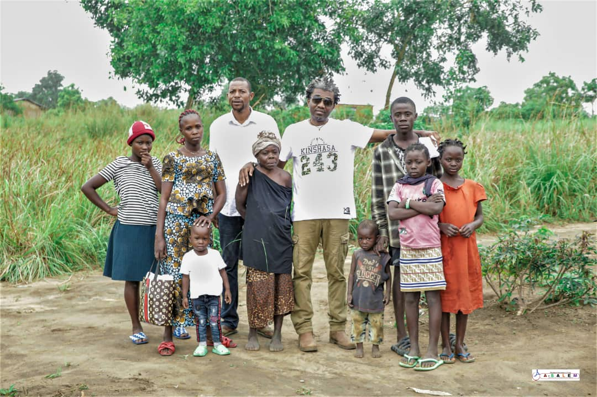

Donate
Give to support wells, food, shelter, and education programs.
About A-SALEM
A-SALEM began as a personal promise from founder Alice Apendeke to heal trauma, protect the vulnerable, and build peaceful communities across eastern Congo.

A-SALEM was founded in 2002 by Alice Apendeke, a Congolese woman who turned personal tragedy into a mission of hope. At just 25 years old, Alice became a widow after her husband, a military pilot, died in a tragic plane crash. Left to raise four young children amid political instability, she faced harassment, social pressure, and severe economic hardship. At times, she and her children had no food, no safe place to sleep, and no support.
Instead of giving up, Alice returned to school, completed her education, and found work in a hospital where she began helping patients, hungry children, and neighbors in need. Using a small portion of her paycheck, she bought food, medicine, and supplies to share. From these humble beginnings, A-SALEM was born—its name meaning “towards peace,” reflecting Alice’s vision to create peace through care, compassion, and community service.

"Towards Peace, For the People." Founded in 2002 by Alice Apendeke, A-SALEM is a grassroots, women-led nonprofit organization based in the Democratic Republic of Congo. True to its name, A-SALEM was born from a deep personal mission—to bring peace, dignity, and support to those who have none.
Today, A-SALEM continues to serve orphans, displaced families, and women impacted by war and violence—offering food, clean water, education, clothing, and safe shelter. Led by Alice and her son Robby, A-SALEM remains rooted in the community, serving with practical, hands-on care.
Our Work
A-SALEM serves communities in Kinganga and Bita, responding to war not just with aid—but with hope, care, and practical tools to rebuild lives.
Most recently, A-SALEM began a water initiative to build clean water wells, helping prevent disease and fuel local economies. With the first well built, the orphanage moved to a safer location and began generating income by selling water to fund food, clothing, and entrepreneurship education for youth. The need remains immense, and A-SALEM continues to scale this work.
Why Support A-SALEM
When you support A-SALEM, you are helping a trusted, on-the-ground organization restore humanity and hope. Your donation helps A-SALEM:
Stand with A-SALEM. Give Peace. Give Water. Give Hope.
Get Involved
A-SALEM has no large budgets—only courage, compassion, and a deep love for the people it serves. Your support helps provide practical assistance and long-term opportunity.
Give to support wells, food, shelter, and education programs.
Partner with us locally or remotely to expand services and training.
Work with A-SALEM to replicate clean water projects and vocational programs.
To learn more or get involved, email us at contact@a-salem.org.